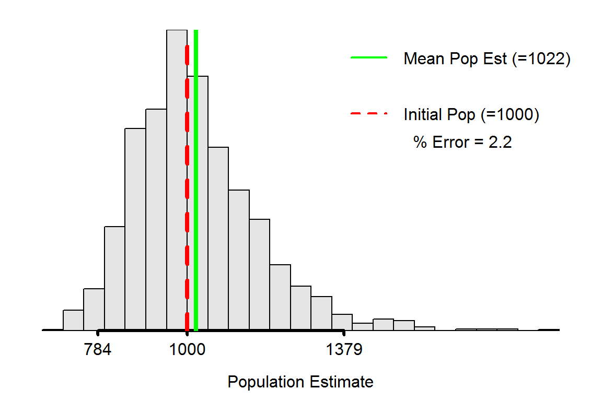

Understanding the Bias of Petersen Estimates
 Estimating the number of fish in a fish population is one of the most common tasks facing a fisheries biologist. One common method for estimating fish abundance is to sample the population, mark (or tag) and return the sampled fish to the population, take a second sample from the population, and use the ratio of number of marked to unmarked fish to estimate the population size. The most common formula for estimating abundance was derived nearly simultaneously by Petersen and Lincoln, though slight modifications to the formulas were derived by Chapman and Bailey. Taken together, these methods are called the “Petersen family” of mark-recapture methods. In this exercise, you will use simulations to assess how accurately the original Petersen and the Chapman modification estimate population abundance.
Estimating the number of fish in a fish population is one of the most common tasks facing a fisheries biologist. One common method for estimating fish abundance is to sample the population, mark (or tag) and return the sampled fish to the population, take a second sample from the population, and use the ratio of number of marked to unmarked fish to estimate the population size. The most common formula for estimating abundance was derived nearly simultaneously by Petersen and Lincoln, though slight modifications to the formulas were derived by Chapman and Bailey. Taken together, these methods are called the “Petersen family” of mark-recapture methods. In this exercise, you will use simulations to assess how accurately the original Petersen and the Chapman modification estimate population abundance.
Simulation Description
The mrClosed1Sim() function in the package may be used to evaluate the performance of the Petersen family of mark-recapture methods to estimate population abundance. This function works by creating an initial population for which the size is chosen, and thus known, by the user. The function will then take a sample of fish according to a choice made by the user (discussed below). The individuals in this sample are then “marked” and returned to the population. A second sample from this population is then taken and the number of previously marked fish is counted. From these results an estimate of population abundance is computed according to the Petersen family method selected by the user. This process is then repeated a large number of times.
The mrClosed1Sim() function takes three arguments:
sim=is used to select the type of simulation to be used. Usesim="distribution"(use on this page) for simple simulations to assess characteristics of the sampling distribution of the population abundance estimate. Usesim="assumptions"(use on the next pages) to assess the effect of assumptions violations on the population abundance estimated.N=is the known initial population size (default isN=1000).rsmpls=is the number of simulations to run for each set of parameters (default isrsmpls=2000).
After calling the function with sim="distribution" a plot will appear with a histogram of the estimated population abundance for each rsmpls. The histogram is augmented with a red vertical line at the true known initial population size (N) and a green vertical line at the mean estimated population abundance from all rsmpls runs. The histogram is also labeled with the percentage error of the mean population size from the known true population size (positive numbers mean that the known population abundance was over-estimated, on average).
> mrClosed1Sim(sim="distribution")
For example, the plot above shows that the sampling distribution for the population abundance estimates is right-skewed. In addition, the population abundance estimate is biased because the mean population abundance estimate is greater than the initial population abundance (the green line is greater than the red line2). The bias is an overestimate by 2.2%. In addition, an approximate 95% confidence interval for the population estimate is from 784 to 1379.
In RStudio, this plot will have a gear icon in the upper-left corner that will open a dialog box that allows you to change the estimation method (default is Petersen), expected number of fish to tag on the first sample (Marked (M) slider), and the expected number of fish to capture on the second sample (Captured (n) slider). Moving a slider or pressing the Rerandomnize button will force another set of rsmpls to be constructed.
Questions I
Each simulation below should be based on a known population size of N=1000 individuals (the default) and should use at least rsmpls=2000 simulation runs (the default), an expected number of marks of 100, and an expected number in the second sample of 100. Once the sliders have been set at the requested levels, the Rerandomize button should be pressed several times to ensure that any conclusions that you draw are not based on the results of a single set of random simulation runs.
- Does the Petersen method under, over, or accurately estimate the initial population abundance?
- Does the Chapman modification method under, over, or accurately estimate the initial population abundance?
- Do your answers to the previous two questions change with (a variety of) other expected number of tagged fish and second sample sample sizes.
- What conclusion can you draw from your answers to these two questions?
Questions II
Each simulation below should be based on a known population size of N=1000 individuals (the default), should use at least rsmpls=2000 simulation runs (the default), and should use the Chapman modification. Each questions should begin with an expected number of tags of 100 and an expected number in the second sample of 100.
- Increase the expected number of marks (in increments of 50).
- What happens to bias percentage?
- What happens to shape of the sampling distribution?
- What happens to the width of the approximate confidence interval?
- Increase the expected number in the second sample (in increments of 50).
- What happens to bias percentage?
- What happens to shape of the sampling distribution?
- What happens to the width of the approximate confidence interval?
- What happened to the bias percentage with increasing values of the these two parameters?
- What happened to the shape of the sampling distribution with increasing values of the these two parameters?
- What happened to the width of the confidence interval with increasing values of the these two parameters?
- Does increasing one or the other have a larger impact?